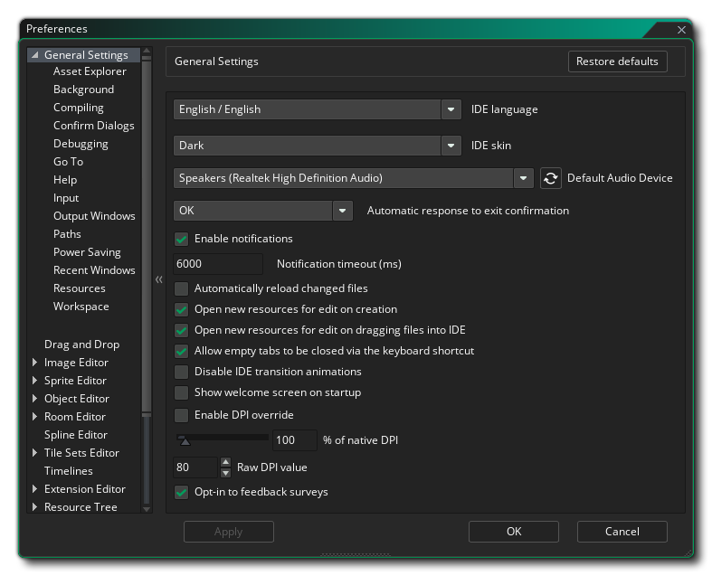

La ventana de Preferencias es una parte esencial de GameMaker Studio 2, ya que es donde puede configurar y personalizar su experiencia utilizando el IDE, así como configurar cualquier SDK de plataforma específica, etc. En esta sección cubrimos las áreas específicas de IDE de la ventana de preferencias: para las plataformas de destino individuales, consulte la sección de Preferencias de la plataforma de destino. Tenga en cuenta que después de cambiar las preferencias desde esta ventana, debe hacer clic en el botón Aplicar para que tengan efecto.
Si, después de cambiar las opciones aquí para personalizar GameMaker Studio 2 a su gusto, desea hacer una copia de seguridad de las preferencias que ha establecido, debe ir a la carpeta. %AppData%/GameMakerStudio2/<your_account_name>/ y luego copie los dos archivos siguientes en un lugar seguro:
- local_settings.json
- cloud_settings.json
Sin embargo, si desea restablecer las preferencias que ha cambiado, debe hacer clic en el botón Restaurar valores predeterminados en la parte superior de la ventana. Tenga en cuenta que esto solo restaurará los valores predeterminados para la sección que se está editando actualmente.
Puede abrir las Preferencias de GameMaker Studio 2 desde el menú Archivo en la parte superior izquierda del IDE: 
Una vez que la ventana de Preferencias esté abierta, tendrás las siguientes opciones diferentes:
- General
- Arrastrar y soltar
- Editor de imagen
- Editor de Sprite
- Editor de objetos
- Editor de sala
- Editor Spline
- Editor de conjuntos de azulejos
- Líneas de tiempo
- Editor de extensiones
- Árbol de recursos
- Editores de texto
- Idiomas
- Mercado
- Configuraciones de plataforma
- Complementos
- Lista de quehaceres
- Feeds de tiempo de ejecución
- Canal beta